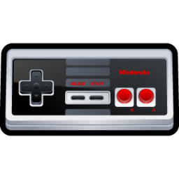
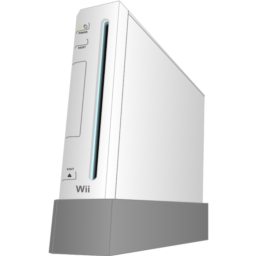
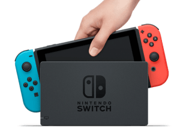
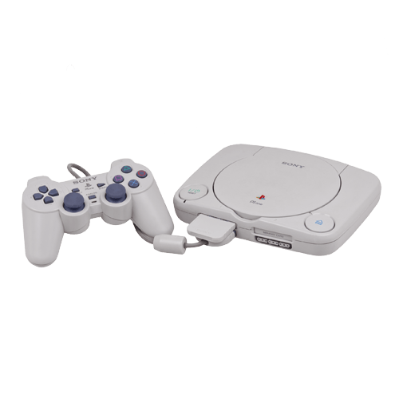
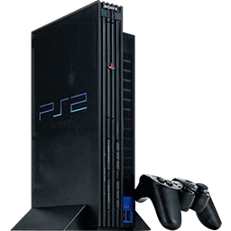
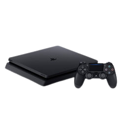
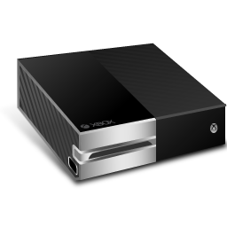
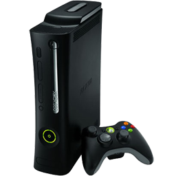

Primer uso masivo de D-pad (cruceta de control), revolucionó la industria
después del colapso del mercado de videojuegos de 1983

NES
Nintendo Wii
2006
Wii Sports, The Legend of Zelda: Twilight Princess
Innovador control por movimiento con el Wii Remote, gran accesibilidad para
jugadores casuales, introducción del Wii Balance Board para juegos de fitness

Wii
Nintendo Switch
2017
The Legend of Zelda: Breath of the Wild, Mario Kart 8 Deluxe
Consola híbrida (portátil y sobremesa), Joy-Cons con detección de movimiento
avanzada y funciones hápticas

Nintendo Switch
PlayStation (PS1)
1994
Sony
Final Fantasy VII, Metal Gear Solid, Gran Turismo
Sonido CD de alta calidad, gráficos poligonales 3D avanzados, introducción de
Memory Cards para guardar partidas

PS1
PlayStation 2
2000
Grand Theft Auto: San Andreas, Shadow of the Colossus
Primer sistema compatible con DVD, soporte para reproducción de películas, y
retrocompatibilidad con juegos de PS1

PS2
PlayStation 4
2013
The Last of Us Part II, God of War
Streaming de juegos mediante PS Now, integración de la funcionalidad "Share"
para grabar y transmitir juegos en redes sociales

PS4
Xbox
2001
Microsoft
Halo: Combat Evolved, Fable
Primer uso de un disco duro integrado para guardar partidas y contenido
descargable, conexión a banda ancha para Xbox Live

Xbox
Xbox 360
2005
Halo 3, Gears of War, Call of Duty: Modern Warfare 2
Servicios digitales como Xbox Live Marketplace, creación de avatares
personalizados, y soporte para juegos indie con Xbox Live Arcade

Xbox 360
Xbox Series X
2020
Halo Infinite, Forza Horizon 5
Soporte completo para trazado de rayos en tiempo real, almacenamiento SSD de
alta velocidad para cargas ultrarrápidas, Quick Resume para cambiar entre juegos al
instante
 Museo de los videojuegos
Museo de los videojuegos